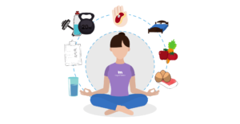

Hábitos de productividad
Tecnicas para ser más productivo
Las personas tendemos a distraernos a menudo, con redes sociales,
que son una fuente de distración lo que provoca
falta de concentración y una menor productividad a la hora de ejecutar nuestras actividades
Técnicas de productividad
- Tener una agenda
- Destinar tiempos para cada actividad
- No tener distracciones a la mano (como el celular)
Hábitos diarios
- Poner horarios para cada actividad
- Hacer 30 min de ejercicio
- Estar bien hidratado
Los mejores videos para ser más productivo
Top 3 videos
- Cómo planificar tu semana de
altísima productividad con estos 6 pasos
- Cómo estructurar tu día productivo,
según la ciencia? Rutina perfecta en 5 pasos
- Cómo ser Más Productivo
(productividad para mejorar Tu Salud)
Tabla de hábitos
Los mejores hábitos segun los expertos
| Hábitos mentales |
Hábitos espirituales |
Hábitos fisicos |
Hábitos emocionales |
| Lectura |
Meditación |
30 min de ejercicio |
Tecnicas de respiración |
| Escritura |
Yoga |
Alimentación |
Diario |
